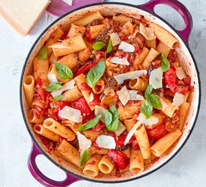

Whip up our easy vegetarian caponata pasta in just 20 minutes. It's simple to make, budget-friendly and packs three of your five-a-day into one delicious meal.
2 mins
18 mins
Easy to make
Serves 4

Ingredients
4 tbsp olive oil (or use the oil from your chargrilled veg, see below)
1 large onion, finely chopped
4 garlic cloves, finely sliced
250g chargrilled Mediterranean veg (peppers and aubergines, if possible) from a jar, pot or deli counter, drained if in oil (you can use this oil in place of the olive oil) and roughly chopped
400g can chopped tomatoes
1 tbsp small capers
2 tbsp raisins
350g rigatoni, penne or another short pasta shape
bunch basil leaves, picked
parmesan (or vegetarian alternative), shaved, to serve
Instructions:
Heat the oil in a large pan and cook the onion for 8-10 mins until starting to caramelise (or for longer if you have time - the sweeter the better). Add the garlic for the final 2 mins of cooking time.
Tip in the mixed veg, tomatoes, capers and raisins. Season well and simmer, uncovered, for 10 mins, or until you have a rich sauce.
Meanwhile, boil the kettle. Pour the kettleful of water into a large pan with a little salt and bring back to the boil. Add the pasta and cook until tender with a little bite, then drain, reserving some of the pasta water. Tip the pasta into the sauce, adding a splash of pasta water if it needs loosening. Scatter with the basil leaves and parmesan, if you like, and serve straight from the pan